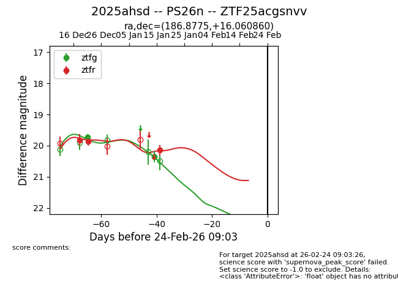
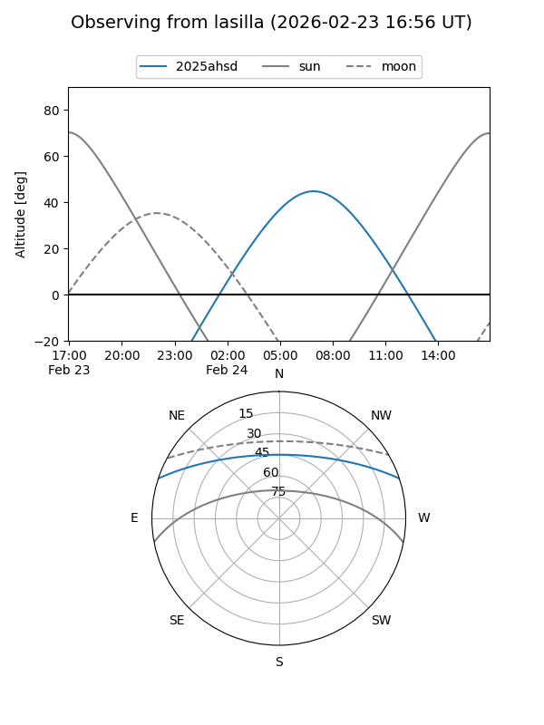
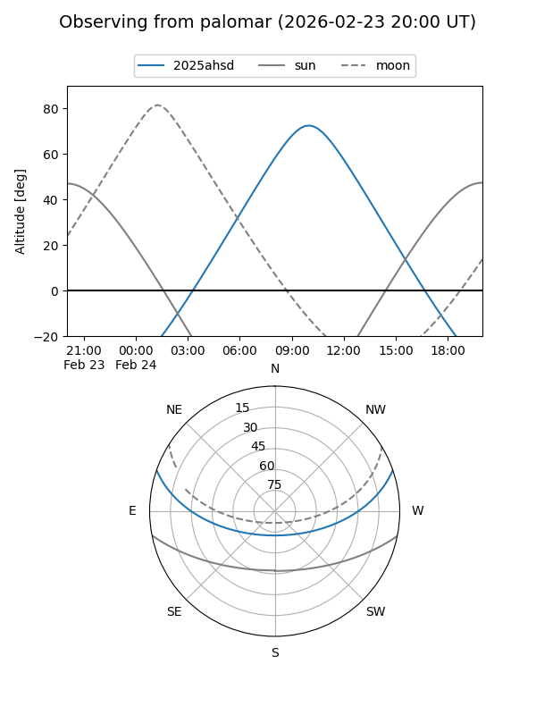
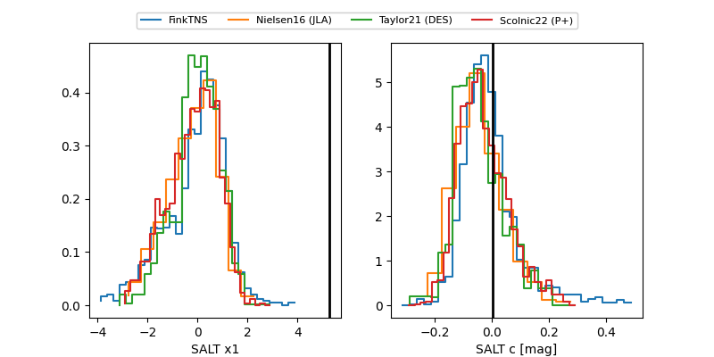

2025ahsd
Target 2025ahsd at 2026-01-14 13:05
Aliases and brokers:
FINK: link
Lasair: link
ALeRCE: link
TNS: link
YSE: link
alt names
ZTF25acgsnvv (ztf,fink_ztf)
2025ahsd (tns,yse)
PS26n (panstarrs)
Coordinates:
equatorial (ra, dec) = 186.8775,+16.06086
equatorial (HMS+DMS) = 12:27:30.59,+16:03:39.10
galactic (l, b) = (275.0857,+77.61941)
Flags:
Photometry:
last ztfg=20.35, ztfr=19.86
2 ztfg, 2 ztfr detections
Lightcurve

Visibility


Additional plots
